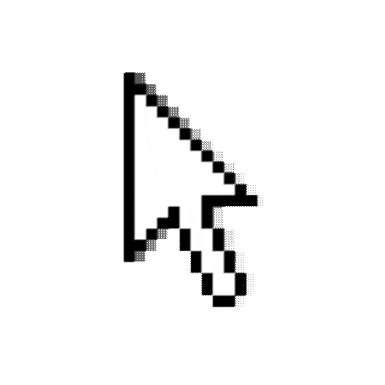

About This Web Page
My goal in creating this webpage is to share my personal growth story, the kind that I couldn't include on
a CV or post on LinkedIn. After all, growth isn't just about earning certificates or achieving success; it’s
a journey. This isn't a blog or a portfolio—it is just a cute webpage. Thank you for stopping by!
HTML, CSS, and a little bit of JavaScript were used to create this website.
AI was used only once during the initial stage of creating this webpage, and all subsequent edits were made by me. I'm still a learner! 😊
Projects!
When I started university, I wasn't yet sure which field I wanted to focus on. It took me a year and a half to figure that out! During that time, I explored various topics and worked on projects that were unrelated to one another. This really helped me discover my interests, so I’m glad I did it that way. Now, I am working on projects in the fields I want to focus on (e.g., optoelectronics, quantum coding, etc.). Until those are completed, feel free to take a look at my past projects!
Multifunctional Molten Salt Reactor Core Design (2026)
Focus Duration Tracking and Work Support Device Using Eye Tracking (2026)
AI Powered POS Device Spending Type and Campaign Analyzer (2026)
Hybrid Silent Authentication System Software Integrated with Post-Quantum Cryptography
Algorithms (2025-2026)
Pressured Water Reactor Core Design For Submarines (2024-2025)

The Story
(04.07.2026) In my final year of primary school, on the old and slow laptop we had at home, I would
watch 'hacking' tutorials I found on YouTube and run things in the command prompt,
thinking I was a software engineer. This later turned into an attempt to learn web design from an HTML book I
had found, I’m not even sure where from. It was genuinely difficult for me back then; who could have imagined
that adding a video to my website would be so hard! Still, I must say I was making quite a bit of progress and
had started building my own blog, until our computer broke down. So I had to take a long break from my
studies,
but this age became the starting point for my 'dream of becoming a software
engineer' that would last for six years. Years later, we got another computer, and I continued trying
to
learn web design, but it never really went beyond HTML and a bit of CSS because there was no one to help me,
nor did I have a well-functioning computer or Wi-Fi. By my junior year of high school, physics and mathematics
started to interest me more than any other subject for the first time. During this period, a book I found in
the small library next to my school, Particle Physics: The Adventure of
Discovering the Smallest by Sezen Sekmen,
sparked my interest in particle physics, and for a while, I studied the subject on my own. However, it was
time to prepare for the university entrance exam so I put this subject aside for a while. Yet, the physics
classes I
took in my senior year continued to increase my interest in physics. I had wanted to study software
engineering since primary school, but those last two years
were when I truly fell in love with physics and began to feel like I belonged in this field. Moreover, I met
very valuable and knowledgeable physics and math teachers, and I even participated in a math competition and
won
an award! For these reasons, just one week before the university entrance exam, my goal changed: Physics Engineering. Honestly, I wanted to go into the Physics
department, but due to the guidance
of my family, here I am!
For the first time: University.
When I arrived at university, the courses I took in the first semester didn't feel much different from high
school physics. The first thing I did during this term was to join two student clubs at my university. In the
first one,
The Physics and Research Society, I had the opportunity to conduct
various experiments, meet people who shared my interests, and explore physics in greater depth. The cloud
chamber experiment we conducted was one of the most impressive ones for me;
we worked on it from scratch, putting in a lot of effort! Secondly, I joined the hydromobile vehicles society
with a clear goal: to work on a project. I was excited because I had finally reached university and had the
chance to
actually do something. There were many options, and since I was interested in particle physics, I joined a
team that would be designing a nuclear reactor core, where I worked in the theoretical unit. I must say that
this group and
project taught me a lot, and one of those lessons was that particle
physics, in reality, wasn't quite as enjoyable as I had expected. When I reached the second semester
of my freshman year, I began to feel the difference between my
major and high school, and that was exciting! I was learning many new things from many valuable professors.
3rd Semester
At this point, I realized that Physics Engineering was an even more suitable place for me than Physics. We
were taking engineering courses like technical drawing and computer programming, which I was good at, and we
also had theoretical physics courses,
which I absolutely loved! During this term, I also had an 'Introduction to
Optics' course, and—oh, I was terrible at it! I didn't like optics in high school either, so I wasn't
excited about this class at all. We were mostly studying geometrical optics,
and it felt like I wasn't understanding anything. I had decided back then that optics wasn't the right field
for me. However, after the midterms, things changed a bit, and we started studying wave optics; surprisingly,
I loved it! Because of this, I began
the 'Waves and Oscillations' course in the second semester of my
sophomore year with great enthusiasm. During the semester break in February, I continued my own studies and
realized that I had a profound interest in wave optics. When we started the Waves
course, it was a disappointment to learn that we wouldn't have enough time to cover optical waves. Therefore,
I asked my esteemed professor to recommend a resource on optical waves, and his directing me to his own
optoelectronics notes resulted in me attending
his optoelectronics course for graduate students as a guest student
throughout the entire semester.
In addition to the Waves and Optoelectronics courses I took, as a result of my individual studies and
research, I began to take an interest in fields like optical design,
optoelectronics, and quantum optics, and I concluded that these were the areas
I wanted to focus on. Furthermore, I have recently been interested in quantum programming as well. Bringing things to the present day, these
are the fields I am currently interested in, and I am continuing my work at full throttle, constantly
learning! Phew.
I told this at great length. If you've read this far with curiosity, thank you.